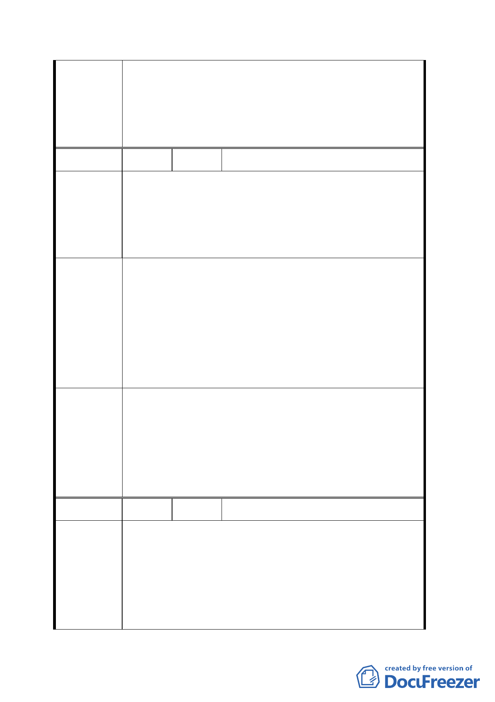

1. 依規定住 3-2 需面臨 40 公尺以上計畫道路，故無法放
寬。
委員會決議
2. 有關土地使用分區比照國父紀念館四周，查土地使用分
區係視各區實際使用狀況，故無法完全比照。
編 號 ２ 陳情人 曾香蘭
1. 從建立獨特景觀意象上，本案專用區範圍似嫌過於狹
窄。
陳情理由
2. 這一帶居民是燈會最大受害人，應適時給予回饋。
3. 遊客大多將車輛停放堂後這區。
1. 建議再適當擴大，如中正紀念堂後側目前以信義路二段
十巷延伸到愛國東路，建議以信義路二段四十四巷、杭
建議辦法
州南路二段二十五巷、愛國東路二十一巷延伸至對面二
一○巷轉金華街迄羅斯福路一帶。
2. 應適時給予回饋。
3. 請市府好好規劃。
1. 依市府公展範圍已符合管制目的，無再擴大範圍之必
要。
委員會決議 2. 燈會係一年一次且即將移設其他地區，所提意見留供燈
會辦理單位研究。
3. 留供交通管理單位參處。
編 號 ３ 陳情人 國防部文化大樓營區指揮部
陳情位置：中正區中正段三小段 84、84-1、84-2 地號（中
正區信義路一段 3 號）
陳 情 理 由 陳情理由：本營區 A 棟大樓建於民國七十年，B 棟大樓建
於民國五十九年，均為國防部各幕僚及特業單位辦公使
用，現為住宅區。
六